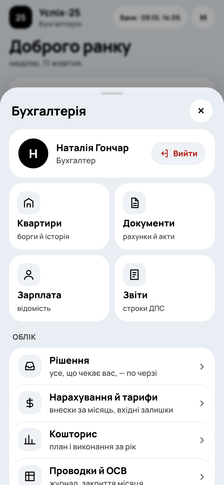

Мешканець
Своє приміщення та інформація про будинок.
Баланс, історія, квитанції й оплата
Лічильники, звернення, документи
Збори та опубліковані витрати
Цифрове управління будинком
Внески, банк, зарплата, облік і звітність — в одному застосунку.
У кожного — своє робоче місце
Своє приміщення та інформація про будинок.
Баланс, історія, квитанції й оплата
Лічильники, звернення, документи
Збори та опубліковані витрати
Управління будинком і контроль рішень.
Збори, голоси та PDF-протоколи
Звернення, оголошення й команда
Контроль платежів та погоджень
Облік і регулярні процеси по кроках.
Нарахування, банк і документи
Зарплата, проводки та кошторис
Закриття місяця й XML-звіти
Права голови, члена правління та бухгалтера розділені.
Від операції до підсумку
Один маршрут для регулярної роботи бухгалтера.
Тарифи, приміщення, історія та квитанції.
Виписки, оплати мешканців і черга рішень.
Рахунки, акти, договори й оплати постачальникам.
Табель, аванс, виплата, податки та внески.
Проводки, ОСВ, кошторис і залишки.
Усунути розбіжності й зафіксувати місяць.
Автоматизація руху коштів
Autoclient · банківський API
Період синхронізації виписок.
Оплата переходить в історію та баланс квартири.
Неоднозначна операція — у черзі «Рішення».
Пов’язані процеси
Рахунки, акти й вкладення — з історією оплати.
Погодження, сторно та повернення зв’язані з операціями.
Акт не подвоює витрату рахунку.
Аванс, остаточна зарплата, відпустки й лікарняні.
Податки та внески переходять у платіжки й звіти.
Факт виплати підтверджується банком.

Реальний інтерфейс
кабінету бухгалтера
Узгоджені цифри
Подвійний запис як основа обліку
Розбіжності блокують завершення періоду.
Фінансові зміни в ньому блокуються.
Це право має лише голова.
План/факт кошторису та звіт мешканцям спираються на облікові операції.
Тестове середовище.
Звіт перевірки від 11.10.2026.
Від розрахунку до квитанції
Податковий розрахунок J0500111 із Д1, 4ДФ та Д5 за потреби.
XML-архів · CSV · версіїВручну завантажити файли, підписати КЕП і подати в Електронному кабінеті ДПС.
Зовнішній кабінет ДПСДодати квитанції № 1 і № 2 та відстежувати стан звітного пакета.
Архів та статусиПрийняття звіту підтверджує квитанція № 2. Календар нагадує про строки.
Щоденна робота будинку
Паперові голоси співвласників, електронні голоси квартир і публікація PDF-протоколу.
Фото, статуси, чат, оголошення та спільна база документів.
Баланс, оплата за QR, показники лічильників, звіт витрат і стан світла.

ІНТЕРФЕЙС ПРОЄКТУДемонстраційний огляд правління.
Менше ручного перенесення даних
Синхронізація банку та зіставлення відомих оплат.
Розрахунки, проводки та підготовка звітних даних.
Черга завдань, нагадування та сповіщення.
Підтвердження нарахувань, документів і платежів.
Неоднозначні операції та закриття місяця.
КЕП голови в банку й подача звітності до ДПС.
Потрібні Firebase, доступ до банку й налаштування під будинок. Інтерфейс кешується; фінансові операції та зовнішні інтеграції потребують інтернету.
Рекомендований наступний крок
Реквізити, приміщення, тарифи, початкові залишки та документи.
Статут, облікова політика, ролі, окремий Firebase та банківський Autoclient.
Паралельний місяць: внески, виписки, витрати, зарплата, ОСВ і XML.
Опис, екрани та посилання
на застосунок і код.
Наступні модулі: каса, основні засоби, річна фінзвітність і автоматична подача ДПС.
Під час запуску в іншому ОСББ потрібна адаптація правил голосування та обліку.